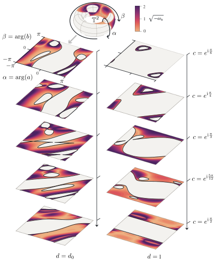
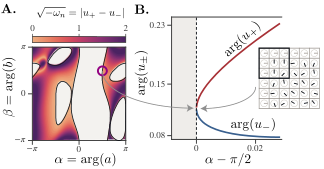

A Lean 4 formalization verifies the finite-corner classification theorem of order-six complex Hadamard matrices, including the needed literature structural results, without assuming them.
Abstract
Complex Hadamard matrices encode perfectly balanced unitary transformations. Their classification is complete through order five, but order six – the first dimension in which several continuous families coexist with an isolated solution – has remained open for decades. Here, we give a complete and exact finite-incidence classification of order-six complex Hadamard matrices up to standard equivalence. We supply the global step missing from Szöllősi's dilation method, which allows us to prove an even stronger version of his conjecture: every complex Hadamard matrix of order six can be recovered algebraically from a suitable, dephased $3 \times 3$ corner defined by four initial phases. We then describe the geometry of the reconstruction from these phases and show that, except for Tao's isolated matrix and a single explicit Karlsson matrix, every class admits a representative obtained by solving one quadratic and one cubic equation in both the horizontal and vertical directions. Our work resolves the classification problem and provides a rigorous framework for further investigating order-six Hadamards, with applications to balanced six-mode interferometers and the study of mutually unbiased bases.
Problem
Classification of complex Hadamard matrices is complete through order five. Order six, where several continuous families coexist with an isolated matrix, has remained open. Szöllősi's dilation method lacked a global step guaranteeing that every matrix can be recovered from a 3x3 corner.
Approach
The authors define finite-corner witnesses: dephased 3x3 corners whose candidate completion sets are finite and nonempty. A global routing argument over all 400 positional corners shows that a matrix lacking any witness must lie in the Karlsson or Tao sector, and those sectors are then shown separately to have witnesses. A branch-complete refinement of Szöllősi's construction and a quadratic–cubic four-phase reconstruction describe the geometry. A Lean 4 formalization, together with exact and interval certificates, checks the main theorem and Corollary 19, and proves the needed structural results internally.
Results
Every order-six complex Hadamard matrix is equivalent to one with a finite-corner witness, which proves a stronger form of Szöllősi's Conjecture 4.2. Except for Tao's matrix and one explicit Karlsson matrix, every class has a representative obtained by solving one quadratic and one cubic equation in each of the horizontal and vertical directions.

Figure 2: Geometry of the regular four-phase reconstruction on different two-dimensional slices. Value of the product-regular witness \sqrt{-\omega_{\rm n}} for varying initial seeds a,b,c,d . The two stacks correspond to two different d values. Note that d_{0}=\frac{1+{\rm i}\xi_{0}}{1-{\rm i}\xi_{0}}\approx-0.674-0.739\mathrm{i} , where \xi_{0} is the real root of Eq. ( 77 ). The slices within a

Figure 3: Ramified Hadamard completion at a branch collision. A. Value of \sqrt{-\omega_{n}}=|u_{+}-u_{-}| for varying {\rm arg}(a) and {\rm arg}(b) at fixed c={\rm i} and d=d_{0}=\frac{1+{\rm i}\xi_{0}}{1-{\rm i}\xi_{0}} , where \xi_{0} is the unique real root of Eq. ( 77 ). At the circled seed, the two branches of the quadratic in Eq. ( 56 ) meet and \omega_{n}=0 (black lines). B. Arguments of t